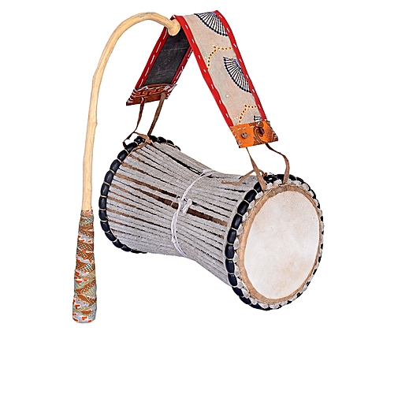
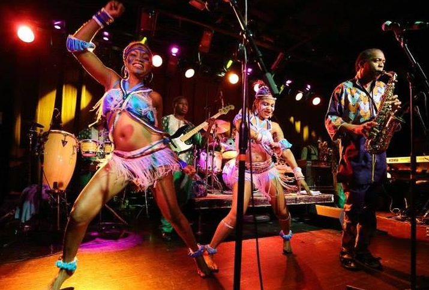
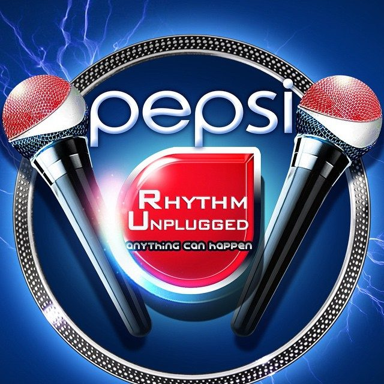
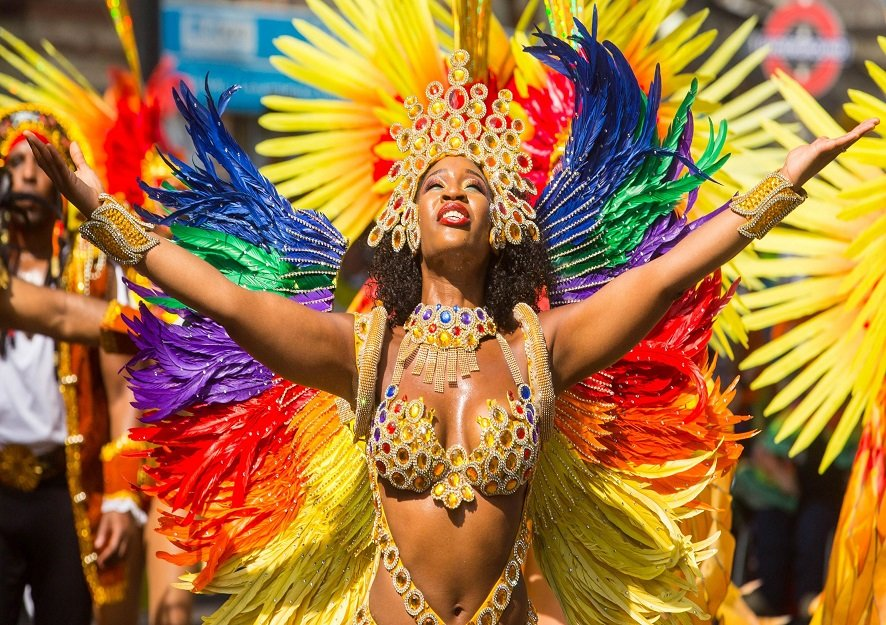

Dundun  The Skin that speaks is what they call this talking drum, it is the most common type of talking drum among the yorubas The new Afrika Shrine  The new Afrika Shrine is a place of fun and entertainment, it is a collection of various contemporary perfomances and various drinks and delicacies to keep up with the energy. The Afrika Shrine is a place to be anytime one is on the mainland of Lagos and it's energetic and safe environment makes it even more attractive for both tourist and residents. Rhythm Unplugged  Rhythm Unplugged is an annual concert in Lagos which is usually staged evry christmas, it is a concert filled with different international artiste and various comedians, this show has invited the likes of Beyonce, Chris Brown,a few to mention, which shows how recognized this show is. If you are in Lagos december you should definetly go for the rythm unplugged concert Lagos Cultural Carnival  Lagos cultural Carnival is a very colorful and attractive event which is scheduled to hold around may of almost every year, the carnival is always filled with different cultures,religions and race as it is not restricted to only Lagosians. There are different showcases from the dressing,painting and most importantly the music that gives the carnival a different intensity.
and it's leather strings are gripped by the drummers left hand, this talking drum is the life of most Yoruba events and
it's sound can be described as the life of the party.